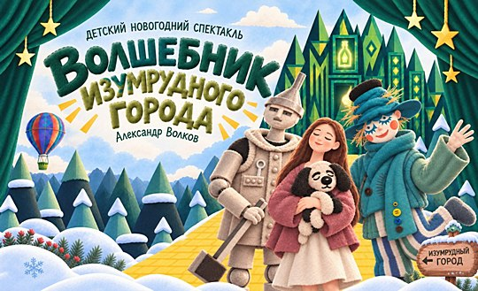
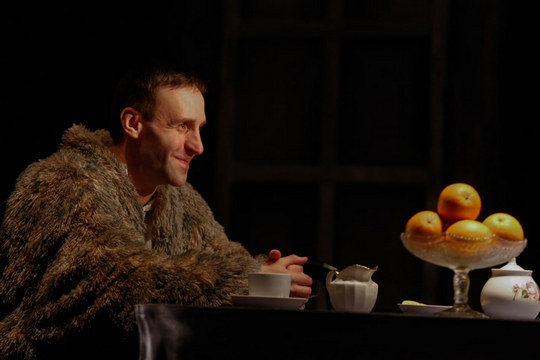

Театр в парке «Дубрава»
Классика и современная драматургия, сказки для детей и концерты — на трёх сценах среди деревьев.
Афиша
Каждый спектакль — одна карточка, а в ней все его даты. Нажмите на дату — откроется покупка.
Новый год
в Дубраве
Днём — сказка для детей, вечером — спектакль для взрослых. Можно прийти всей семьёй, а потом ещё раз — без детей.

Волшебник Изумрудного города
Новогодняя сказка по Александру Волкову. Утренние и дневные показы на каникулах.
Рождественская история
Вечерний новогодний спектакль по пьесе В. Ольшанской.
«У Троицы»
11–20 июня 2027
Сергиев Посад
Фестиваль собирает спектакли об истории России, классической литературе и человеческих судьбах. Театр учредил его в 2014 году, к 700-летию преподобного Сергия Радонежского.
Кому что
Если вам 14–22
Спектакли с зелёной меткой можно оплатить картой — на сайте или в кассе.
Спектакли по карте СемьямС детьми
Сказки от 3+ и новогодние каникулы в театре. Утренние и дневные показы.
Детская афиша ТуристамОт Лавры до Дубравы
Театр — в парке «Дубрава», мкр. Семхоз. Как доехать от центра и от платформы Семхоз.
Как добраться Школам и группамЗа кулисы
Арт-экскурсия «Театральные профессии» и показы по коллективным заявкам.
Оставить заявкуНаша историяс 2004 года
«Театральный ковчег» основал заслуженный артист РСФСР Станислав Коренев. С 2023 года театр работает в центре «Дубрава» в Семхозе: основная сцена на 200 мест, Малый зал на 70, летняя сцена и парк вокруг.
В репертуаре — русская и мировая классика, современная драматургия, сказки для детей и концерты филармонии.

«Иудушка. Страсти»
Спектакль по «Господам Головлёвым» включён в «Золотой фонд театральных постановок России». В октябре 2026 года его показали в Москве, на сцене «Мастерской „12“».
Новости

«Отец Арсений» — премьера ноября
Четыре первых показа — 19–22 ноября на Основной сцене.

«Иудушка» в Москве на «Атласе театральной России»
Спектакль сыграли на сцене «Мастерской „12“» Никиты Михалкова.
10 тысяч зрителей за два дня
Девятый уличный фестиваль «Вне формата. У Троицы» прошёл в Сергиевом Посаде.
Подарочный сертификат в театр
Получатель сам выберет спектакль и дату. Электронный — сразу на почту, бумажный — в кассе театра.